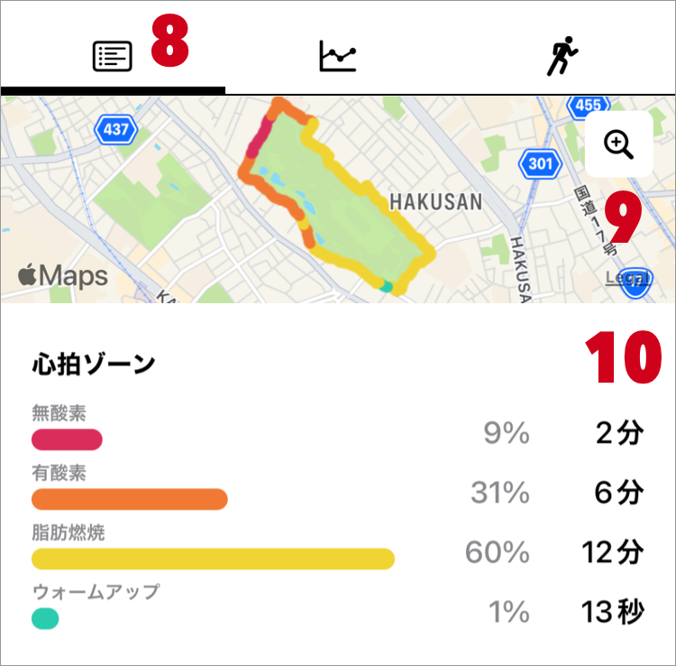
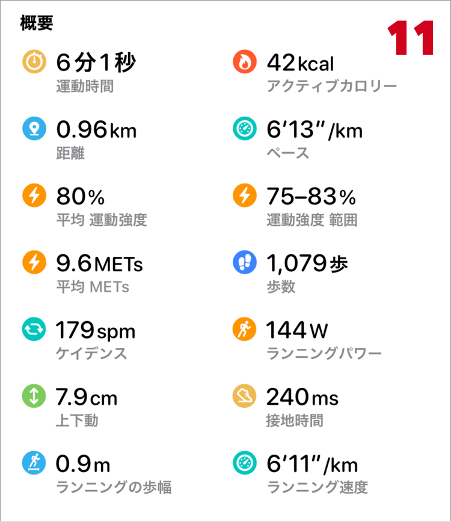

ヘルプ
ワークアウト詳細

- 1. 編集
- ワークアウト名、アクティビティの種類、場所、時間、アクティブカロリー、距離の編集が行えます。
Zonesで登録されたワークアウトのみ表示されます。 - 2. 削除
-
Zonesで登録されたワークアウトのみ表示されます。
削除すると、データの復元はできません。ご注意ください。 -
他アプリで登録されたワークアウトは削除ができません。これはiOS(HealthKit)の制限になります。
登録したアプリ もしくは Appleのヘルスケアで削除してください。 - 3. シェア
- 4. ワークアウト日付
- ワークアウトを開始した時の日付が表示されます。
- 5. ワークアウト時間
- ワークアウト開始時刻 〜 ワークアウト終了時刻
- 6. 登録アプリ（ソース）
- 7. ワークアウト名
- カスタムワークアウトで名前を設定している場合、その名前が表示されます。
それ以外は、アクティビティ名が表示されます。
8. ワークアウト概要
心拍ゾーン時間、運動時間、合計カロリー、ペースなど、ワークアウト概要を表示します。

- 9. ルートマップ
-
移動した位置情報の地図です。位置情報が記録されていた場合のみ表示されます。
ルートの線の色は、心拍ゾーンの色です。
地図をタップすると、大きな地図でより詳細な情報を確認できます。
ルートマップが表示されない場合 - 10. 心拍ゾーン
- 心拍ゾーンに滞在した時間と割合を表示します。
この表示には、心拍数のデータが必要です。

- 11. 概要
-
- 運動時間
- ポーズ時間を除いたワークアウト時間です。
- アクティブカロリー
- ワークアウト中に消費したアクティブカロリーの合計です。
もし、値が大きく違う場合はデータの再収集をお試しください。 - 距離
- ワークアウト中に移動した距離の合計です。
もし、値が大きく違う場合はデータの再収集をお試しください。 - 速度
- 「距離」と「運動時間」を使って計算した速度です。
ただし、以下の場合は計算方法が変わります。
水泳でラップが登録されている場合は、「運動時間」の代わりにラップの合計時間を利用します。
ダウンヒルスキー・スノーボードでセグメントが登録されている場合は、セグメント速度の平均を表示します。 - 速度の形式は設定で変更が可能です。
- 運動強度
- 最大心拍数の何%にあたるかの運動強度です。
- 平均METs
- 安静時を1とした時と比較して何倍のエネルギーを消費したかを示す運動強度です。
- 歩数
- ワークアウト中に歩いた歩数の合計です。
ランニング もしくは カスタムワークアウトで歩数を設定したワークアウトで記録されます。 - ケイデンス
- 1分間に歩いた歩数です。ピッチとも呼ばれます。「歩数」から計算した値です。
- ランニングパワー
- ランニング中の運動量（ワット）の値です。
スピードや傾斜が変化した時の運動量を知ることができます。
- その他のランニングフォームの項目については、ランニングフォームの指標 をご確認ください。

- 12. 心拍数
- 13. 回復心拍数
- トレーニング直後から1分後、2分後の心拍数を比較し、どれだけ回復したか（下がったか）の値です。
回復心拍数について
- 14. 区間情報
-
ワークアウトに区間情報が含まれていた場合に表示されます。
区間ごとに、距離や速度などの詳細情報をみることができます。
距離や速度を表示するためには、ワークアウトに距離データが紐付いている必要があります。
(Zonesによって測定されたトレーニングには距離データが添付されています。)
区間には以下の種類があります。 -
- a. スプリット
- km(mi)単位ごとの区間情報です。
11.合計距離 が1km(mile)以上のときに、表示します。
ワークアウトに距離が紐付けられていない場合は、スプリットの詳細は表示できません。
水泳でラップが登録されている場合は、表示されません。 - b. ラップ
- スプリットと似ていますが、ラップは測定時にワークアウトに記録された情報です。
プール水泳をしたとき時に登録され、泳ぎ方（スタイル）の情報を見ることができます。
Apple Document: HKWorkoutEventTypeLap - c. マーカー
-
マーカーは任意のタイミングの情報になります。
Zonesではマーカーの記録は対応していませんが、 Apple標準の「ワークアウト」アプリにてダブルタップで登録した情報は、マーカーとして表示されます。
Apple Document: HKWorkoutEventTypeMarker - d. セグメント
-
セグメントは、水泳やダウンヒルスキー、スノーボードの時などに登録されます。
Apple Document: HKWorkoutEventTypeSegment - e. アクティブ・ポーズ
- ポーズ(停止)をした場合に表示されます。
ポーズ中は「ポーズ」、ポーズ以外は「アクティブ」としてその区間を表示します。
Apple Document: HKWorkoutEventTypePause
Apple Document: HKWorkoutEventTypeResume
-
スプリット以外の情報は、ワークアウトに登録されている情報になります。
元データは、ヘルスケアアプリの、ワークアウトの詳細 > ワークアウトイベント にて確認できます。
15. グラフ
ワークアウトの経過時間を横軸としたグラフで、詳細な情報を確認できます。
グラフをタップすると、その時点の値が表示されます。
ワークアウトに紐づいたサンプルデータを使用します。
ワークアウトに紐付いていない場合は、時間でフィルタしたデータをヘルスケアから取得しています。
- a. 心拍数
- グラフ線の色は、心拍ゾーンの色です。
- b. 速度・ペース
- このグラフの速度は、「距離」のデータから作成しています。
- c. 高度
-
位置情報に含まれる高度を使用しています。
GPSの測定環境により、正確な高度ではない場合があります。
その他、ケイデンス、ランニングパワー、アクティブカロリー、距離、歩数 のグラフが表示されます。
ワークアウトに記録されている情報により、表示の有無がかわります。
16. ランニングフォームの指標
ランニングフォームに指標は、watchOS 9 で導入されました。屋外ランニングをすると記録されます。
歩いているなど、ランニングの動作をしていない時は、記録されません(watchOS 9.0 で確認)。
走っている人のアニメーションは、測定結果の値に基づいて変化します。
グラフをタップすると、その時点の値を使用したアニメーションに切り替わります。
- 上下動
- 1歩あたりに体が上下した値です。数値が低いほど、ランニング効率がよく、ランニングフォームが良いといわれています。
- 接地時間
- 1歩あたりの地面に足がついている時間です。経験豊富なランナーは短い時間になる傾向があります。
- ランニングの歩幅
- 1歩の長さです。ストライドとも呼ばれます。
- ランニング速度
- watchOSが測定したランニングの速度です。「距離」データから算出した速度とは値が異なりますのでご注意ください。
アニメーションエリアで表示されているケイデンス(spm)の値は、「ランニングの歩幅」と「ランニング速度」から計算した値です。